Released on January 18, 2007
(Next Release on January 24, 2007)
$2 per Gallon?
Reports of gasoline selling for under $2 per gallon are starting to crop up, especially in the Midwest. As of this morning, AAA was showing the average price in Michigan as below $2.00 per gallon, with Missouri and Oklahoma right at $2.00 per gallon, and a few other states just a few pennies higher. According to AAA, many cities are averaging below $2 per gallon with prices in some cities close to $1.90 per gallon. Yet, with the latest U.S. average price at $2.23 as of January 15 (according to EIA’s weekly retail price survey), not everyone is seeing prices this low, so it’s no surprise that people in other parts of the country are wondering when they might see gasoline being sold for under $2 per gallon.
It generally takes a couple of weeks for changes in spot prices (the price at which gasoline is bought from refiners) to begin to be reflected in retail prices, and from four to eight weeks for the full impact to be passed through to the pump, barring intervening changes or shifts in spot prices. Given this time lag, it is fairly straightforward to project the direction of prices over the next week or two. That said, prices may continue to fall nationally, such that they could get close to $2 per gallon by late January or early February.
Why have gasoline prices been falling since the beginning of the year? When looking at factors influencing gasoline prices, it is important to look at both the crude oil market and the gasoline market itself. Crude oil prices have dropped precipitously, with the near-month futures price falling from $61 per barrel on the last business day of 2006 to around $51 per barrel earlier this week. Crude oil prices have declined due to several factors, including mild weather across some of the country this month, above normal petroleum product inventory levels, lower than expected apparent compliance by OPEC members with targeted production cuts, and reports that at least one major commodity index has, at least temporarily, reduced the share of petroleum in its portfolio. Recent increases in global surplus production capacity have also put downward pressure on crude oil prices. In addition, the gasoline market itself has loosened up as gasoline inventories have increased by nearly 13 million barrels over the last three weeks. This increase in available immediate supply, combined with a seasonal drop in demand during the month of January, has put downward pressure on gasoline prices, above and beyond any downward pressure from crude oil prices.
With the Midwest already experiencing a larger price drop over the last few weeks than elsewhere, as prices continue to fall, prices in other parts of the country are likely to fall faster than in the Midwest, thus closing the gap between the Midwest and other regions. Notwithstanding regional differences, the national average may continue to fall over the next few weeks, assuming no disruptions or other shifts in the short-term supply/demand balance. Whether or not the U.S. average price of gasoline will fall below $2 per gallon is still an open question.
Days of Supply Historical Time Series Now Available
Starting with the November 22, 2006 edition of This Week In Petroleum, EIA began including data on Days of Supply for the most recent seven weeks along with a year-ago comparison. As described then, Days of Supply is another way in which analysts measure the adequacy of inventories and is calculated by taking current inventory levels and dividing by the product supplied (used as an estimate of demand) averaged over the most recent four-week period. At that time, historical time series for the data were unavailable, but these have now been added. Time series for Days of Supply for crude oil, total gasoline, total distillate fuel, propane, and jet fuel are now available from EIA’s web site at: http://tonto.eia.doe.gov/dnav/pet/pet_sum_sndw_dcus_nus_w.htm .
Residential Heating Oil Prices Decrease for Fifth Consecutive Week
Residential heating oil prices decreased yet again for the period ending January 15, 2007. The average residential heating oil price fell by 3.7 cents per gallon last week to reach 235.1 cents per gallon, a decrease of 8.0 cents from this time last year. Wholesale heating oil prices decreased 5.1 cents to reach 155.2 cents per gallon, a decrease of 18.1 cents compared to the same period last year.
The average residential propane price decreased by 0.1 cent, reaching 199.2 cents per gallon. This was a decrease of 2.2 cents compared to the 201.4 cents per gallon average for this same time last year. Wholesale propane prices increased by 0.2 cent per gallon, from 93.0 to 93.2 cents per gallon. This was a decrease of 10.7 cents from the January 16, 2006 price of 103.9 cents per gallon.
Retail Gasoline and Diesel Prices Drop Sharply
The U.S. average retail price for regular gasoline for January 15, 2007 decreased 7.7 cents to 222.9 cents per gallon. Prices are now 9.1 cents per gallon lower than at this time last year. East Coast prices fell 5.7 cents to 226.2 cents per gallon. For the second consecutive week, the Midwest saw the largest regional decrease, with prices falling 13.3 cents to 207.7 cents per gallon. Prices there are now 18.6 cents per gallon lower than at this time last year. Gulf Coast prices were down 6.0 cents to 211.1 cents per gallon, while Rocky Mountain prices fell 3.5 cents to 219.9 cents per gallon. Prices for the West Coast were down 4.0 cents to 255.4 cents per gallon, but remain 18.2 cents per gallon higher than at this time last year.
Retail diesel fuel prices also continued to fall, decreasing 7.4 cents to 246.3 cents per gallon. Prices are 1.4 cents higher than at this time last year. East Coast prices saw the largest regional decrease, falling 8.3 cents to 243.7 cents per gallon. Midwest prices dropped 7.5 cents to 240.8 cents per gallon. The Gulf Coast saw a decrease of 6.8 cents to 239.1 cents per gallon. Rocky Mountain prices fell 5.7 cents to 262.5 cents per gallon, and prices on the West Coast decreased 7.5 cents to 274.9 cents per gallon.
Propane Inventories Continue Sharp Decline
Winter storms that continued to grip much of the Midwest sent propane inventories down by nearly 2.3 million barrels last week, a continuation of the sharp fall in inventories seen over the past two weeks. With last week’s drop, U.S. propane inventories stood at an estimated 57.5 million barrels as of January 12, 2007, a level that was about 4.5 million barrels above the same week last year. The weekly stockdraw saw the largest drop in the Gulf Coast with a 1.6-million-barrel decline, followed by a 0.8-million-barrel drop in Midwest inventories. However, since most of the severe weather essentially bypassed the East Coast, and coupled with strong imports that may have buoyed any stockdraw, East Coast inventories remained relatively unchanged during this same time. Propylene non-fuel use inventories edged lower by 0.1 million barrels to account for a 5.9 percent share of total propane/propylene inventories, up from the prior week’s 5.8 percent share.
Text from the previous editions of “This Week In Petroleum” is now accessible through a link at the top right-hand corner of this page.
| Retail Prices (Cents Per Gallon) | |||||||
| 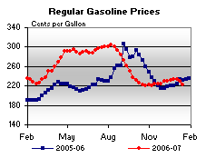 | 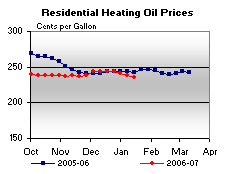 | ||||||
| 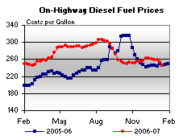 | 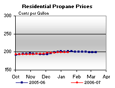 | ||||||
| Retail Data | Changes From | Retail Data | Changes From | ||||
| 01/15/07 | Week | Year | 01/15/07 | Week | Year | ||
| Gasoline | 222.9 | Heating Oil | 235.1 | ||||
| Diesel Fuel | 246.3 | Propane | 199.2 | ||||
| Spot Prices (Cents Per Gallon) | |||||||||||||||||||||||||||||||||||||||
| 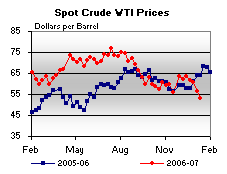 | 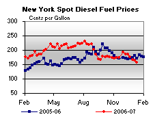 | ||||||||||||||||||||||||||||||||||||||
| 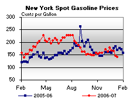 | 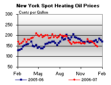 | ||||||||||||||||||||||||||||||||||||||
|
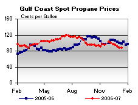 | ||||||||||||||||||||||||||||||||||||||
| Stocks (Million Barrels) | |||||||
| 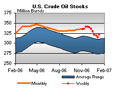 | 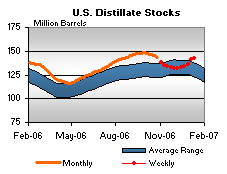 | ||||||
| 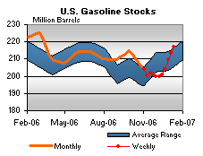 | 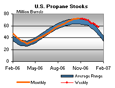 | ||||||
| Stocks Data | Changes From | Stocks Data | Changes From | ||||
| 01/12/07 | Week | Year | 01/12/07 | Week | Year | ||
| Crude Oil | 321.5 | Distillate | 141.9 | ||||
| Gasoline | 216.8 | Propane | 57.528 | ||||